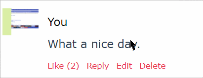
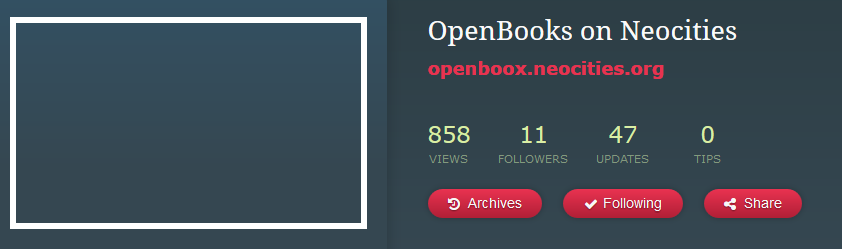

This is a pinned message box
Neocities has a lot more errors/bugs. You can research some of them by looking around on the Neocities Github issues forum. You can also find out other bugs by perhaps asking older users.
31/07/2018
Neocities has a lot more errors/bugs. You can research some of them by looking around on the Neocities Github issues forum. You can also find out other bugs by perhaps asking older users.
I'm drowning in pussy.
I'm in part making a wiki about the website host, Neocities, and one of the articles on the wiki is about bugs on the website host.
- Clive Python on about writing this article.
No product can ever be water-tight, everything has at least one flaw, the same logic goes for Neocities. Over the years of Neocities' life, a number of bugs, and errors have been noted by the community. Here are just a few of the bugs noted.
An example of this error is seen below, as running on Firefox 61.0.1.

On the account settings page (and during sign up process) site/username description says "cannot contain spaces" but the name can successfully be changed to one with spaces.
Visiting the URL of a site with spaces in the name url-encodes the spaces, doesn't give a 404 or other error, and never loads.
No known website with a space are currently know to still be around.
To get this error, you needed to make a blank CSS file on your computer, you then needed to upload it to Neocities. Uploading an empty file results in a "successful" upload, but the file is not actually uploaded.
Directories cannot be created or uploaded. Additionally, attempting to drag-and-drop a folder into the upload area produces an unfriendly error.
Use case:
Doing local dev and making use of 'images', 'css' and 'js' folders as is best practice results in a site which is incompatible with upload to Neocities :(
This issue was fixed around early February 2015.
If a user changes their website address, then their profile will have a number missing images. An example of this error can be seen below with the OpenBoox website. To fix this error, a user can simply re-upload index.html.

You were able to follow yourself in surf mode. Simply go to your site in surf mode, and click the follow button. Sometime later there was a fix, the follow button dissapeared in surf mode when you were surfing your own site.
However, it was still possible to follow yourself. On profile pages, there's a function called Site.toggleFollow(siteId, csrfToken). It toggles you following the site with siteId.
The csrfToken is easy to figure out. It's on a profile page, typically <input name="csrf_token" type="hidden" value="here will be the CSRF token">.
The siteId is harder. If you log in to a different account and go to your profile page, you'll see it when you inspect the follow button in HTML.
Another but harder strategy is to browse sites and sort them by date. Then find your site. This can be hard. When you've found your website, go to the site's profile page before it, inspect the follow button, write down the siteId and do the same for the site after it. Since siteIds are sequential, your siteId is somewhere in between. Now it's a matter of trying which one works.
The problem was fixed, the fix checks makes the server check if the site a who's trying to follow site b, are different sites. If they're different, there will be no follow. Unfollowing is still possible however.
Examples of sites following themselves:
II. Uploading an Empty File is Not Possible
https://github.com/neocities/neocities/issues/2
III. Ability to "delete" a site
https://github.com/neocities/neocities/issues/29
IV. Tweet by Python
https://twitter.com/14Jammar/status/1023712222562975744
This page was last updated: 11/October/2018 @ 19:45
In total this page has had 3 updates since it was uploaded.